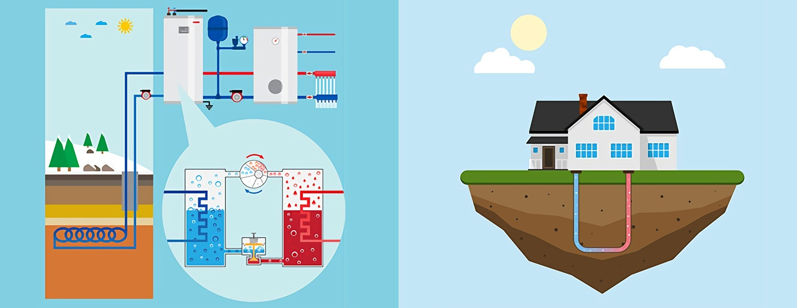
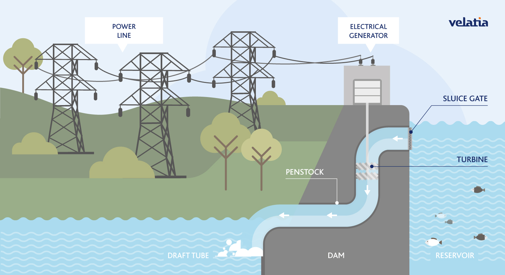
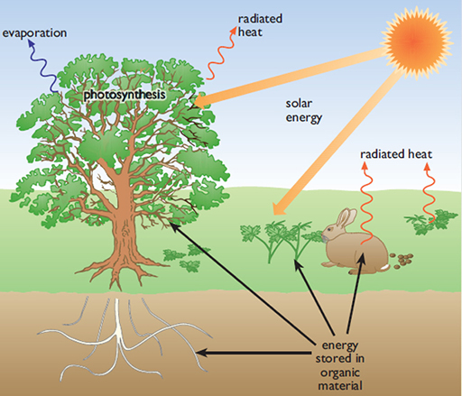
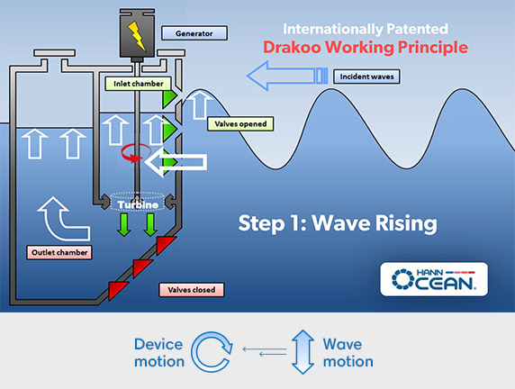
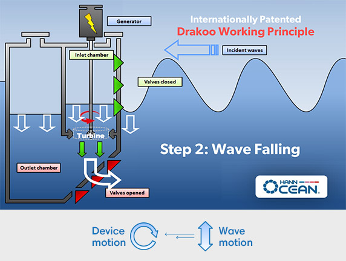

| Muffins |
| Scones |
| Donuts |
| Pies |
| Others |
We use our classic, homestyle, soy based muffin recipe with different daily flavors to provide a delicious variation to our day-to-day menu.
Click here to go back up to the top |
Scones ($3.00)

Our flakey scones come in both blueberry and cranberry flavor. Click here to go back up to the top |
Classic Donuts ($3.00)
|

These cinnamon sugar donuts have a hint of apple due to their delicious apple sauce base. *Exclusively on Wednesday we have chocolate donuts as well!* Click here to go back up to the top |
Pies ($5.00-$15.00)
|

Mini Pies($5.00)
Our seasonally flavored pies are perfect for one person. Their soft crust and gooey center are topped with dairy free whipped cream
Click here to go back up to the top |
Other Goods

Click here to go back up to the top |
Ocean Energy
|


Ocean energy uses the kinetic and thermal energy from saltwater. The best way to produce this specific energy is from the waves and currents that come from oceans. This is a new technology, so it’s still in its early stages of development, but the scientists creating it are positive it’s potential exceeds current day technologies. Click here to go back up to the top |